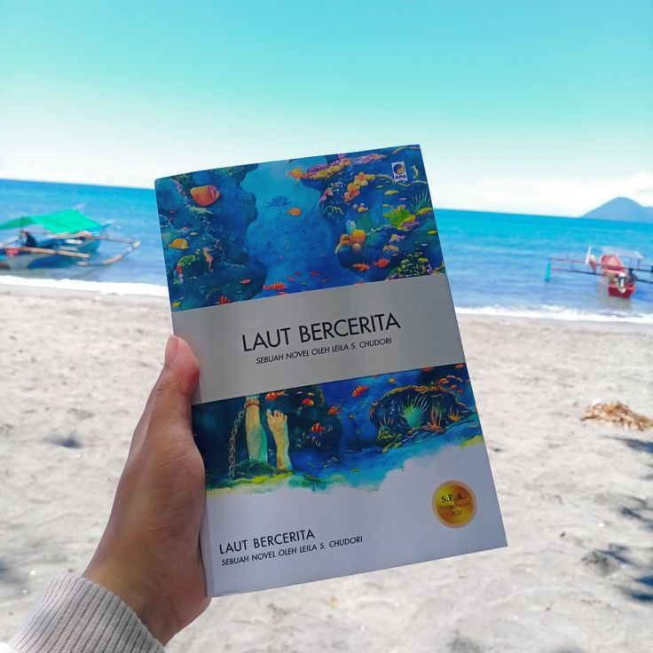
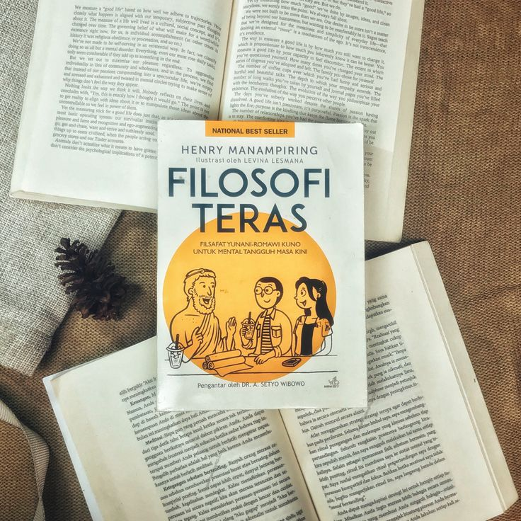
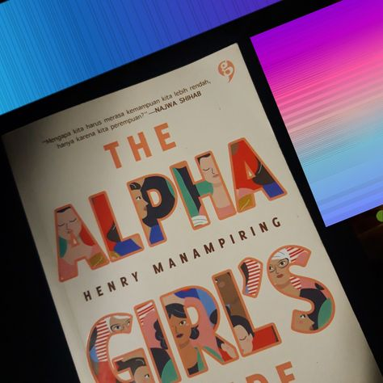
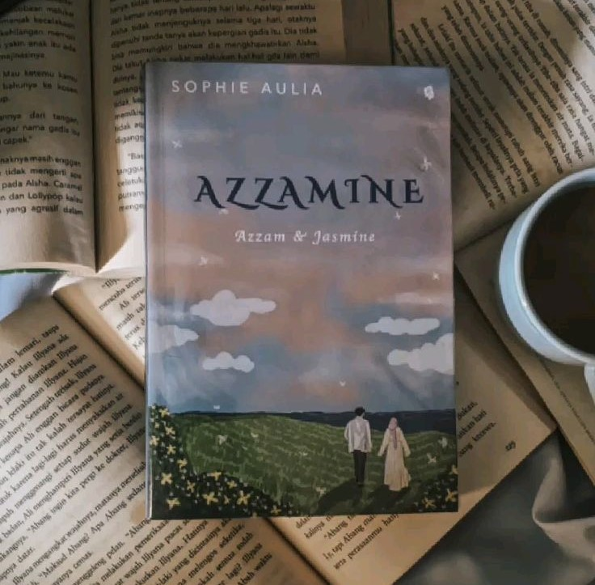
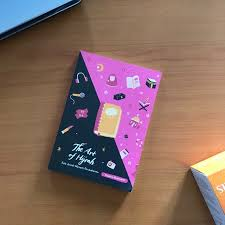
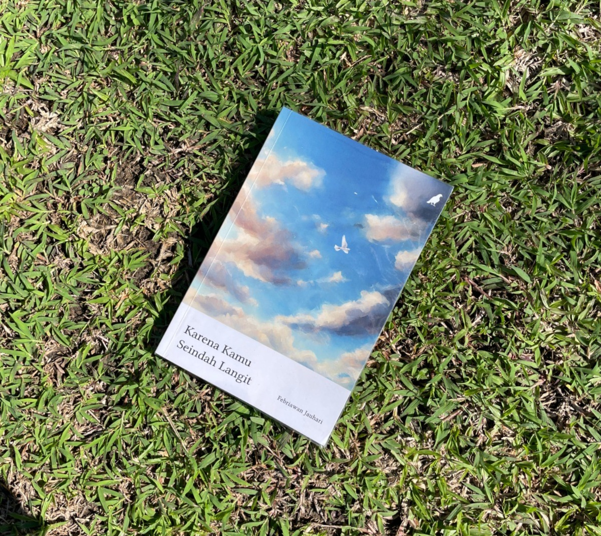

Dwiza Faatihathu Maghrifa
~ Hi! Thanks for visiting my personal website—I'm happy to see you here! 💖 ~
Here you can find more about me, read my blog, and connect with me on LinkedIn and GitHub. ✨
About Me
I am a student at Universitas Malikussaleh studying Information Systems. I enjoy writing, coding, and reading, and I am currently in the process of learning. I am also the founder of a free reading stall called @anginkata.id.
Blog
Check out my blog posts on:
Visit My BlogConnect with Me
 My GitHub Profile
My GitHub Profile
📚 Reading List 📚
-

Laut Bercerita - Leila S. Chudori
Di "Laut Bercerita," Leila S. Chudori membawa kita menyelami kisah-kisah yang dalam dan mengesankan, di mana lautan bukan hanya latar, tetapi juga karakter yang hidup. Buku ini menggambarkan perjalanan hidup para tokoh yang terjerat dalam jaring kenangan, harapan, dan cinta yang tak terungkap.
Saat saya membaca, saya dibawa pada perjalanan seorang pemuda yang merindukan kampung halamannya. Dalam pencariannya akan kebahagiaan dan makna, ia berlayar melewati gelombang kehidupan yang penuh rintangan. Setiap pertemuan dengan orang baru dan setiap tempat yang dikunjungi membawa pelajaran dan refleksi yang mendalam.
Lautan, dengan segala misterinya, menjadi saksi bisu bagi perasaan yang tertahan dan impian yang tak kunjung datang. Chudori menggambarkan betapa setiap ombak menyimpan cerita—baik suka maupun duka—yang tak bisa kita abaikan. Kita juga diajak untuk merasakan kesedihan dan harapan yang bersatu dalam perjalanan hidup setiap tokoh.
Dengan prosa yang indah dan puitis, "Laut Bercerita" mengingatkan kita bahwa hidup adalah rangkaian cerita yang terus berlanjut, meski kadang ombak menghadang. Buku ini bukan hanya menghibur, tetapi juga memberikan perspektif baru tentang bagaimana kita memandang hidup dan segala tantangannya. Saya merasa terhubung dengan setiap cerita, seolah-olah lautan itu berbicara langsung kepada saya, menyampaikan bahwa di balik setiap kesulitan, ada keindahan yang menunggu untuk ditemukan.
-

Filosofi Teras - Henry Manampiring
Ketika saya membaca "Filosofi Teras," saya merasa seolah-olah menemukan teman yang memahami ketidakpastian hidup dan memberikan pencerahan di saat-saat sulit. Buku ini, karya Henry Manampiring, mengajak kita untuk merenungkan makna kehidupan dengan pendekatan yang penuh kebijaksanaan.
Melalui cerita dan refleksi yang dihadirkan, saya diajak untuk memahami bahwa setiap tantangan adalah bagian dari perjalanan. Konsep stoisisme yang diulas di dalamnya membantu saya untuk menerima kenyataan dan menghadapi kesulitan dengan ketenangan.
Manampiring membagikan cara-cara praktis untuk menerapkan filosofi ini dalam kehidupan sehari-hari, mengingatkan saya bahwa kebahagiaan tidak bergantung pada keadaan luar, tetapi pada cara kita meresponsnya. Saya merasa terinspirasi untuk lebih bijaksana dalam menghadapi masalah, menyadari bahwa ketidakpastian adalah bagian dari kehidupan yang tidak bisa kita hindari.
Buku ini bukan hanya sekadar bacaan, tetapi juga panduan yang memotivasi saya untuk menjalani hidup dengan lebih positif dan penuh rasa syukur. Setiap halaman seolah-olah berbicara langsung kepada saya, mengingatkan bahwa meski hidup ini penuh dengan liku-liku, ada selalu harapan dan kebijaksanaan yang bisa kita temukan di dalamnya.
-

Alpha Girls - Henry Manampiring
Ketika saya membaca "Alpha Girls" karya Henry Manampiring, saya merasa seolah-olah memasuki dunia yang penuh inspirasi dan kekuatan. Buku ini menggambarkan perjalanan hidup perempuan-perempuan hebat yang telah menghadapi berbagai tantangan dan mengubahnya menjadi kekuatan.
Setiap cerita membawa saya mengenal tokoh-tokoh luar biasa yang menunjukkan bahwa perempuan tidak hanya mampu bersaing, tetapi juga bisa menjadi pemimpin di bidangnya. Dari pengusaha yang berhasil mengubah industri hingga aktivis yang berjuang untuk hak-hak perempuan, setiap kisah membangkitkan semangat dan rasa percaya diri.
Henry Manampiring dengan cerdas menyoroti keberanian dan ketahanan yang dimiliki oleh perempuan, memperlihatkan bahwa mereka bisa melampaui batasan yang sering kali diletakkan oleh masyarakat. Saya merasa terhubung dengan setiap tokoh, seolah-olah saya sedang mendengarkan cerita mereka secara langsung. Mereka tidak hanya menginspirasi, tetapi juga memotivasi saya untuk berani bermimpi dan mengambil langkah berani dalam hidup saya.
"Alpha Girls" bukan hanya sekadar bacaan, melainkan sebuah panggilan untuk semua perempuan agar tidak ragu menunjukkan potensi mereka. Buku ini mengingatkan saya bahwa meskipun ada rintangan, kekuatan untuk bangkit dan berjuang selalu ada di dalam diri kita. Setiap halaman memberikan dorongan untuk terus melangkah maju dan mewujudkan impian, karena kita semua memiliki kekuatan untuk mengubah dunia.
-

Azzamine - Shopie Aulia
Saat membaca "Azzamine" karya Sophie Aulia, saya merasa seolah-olah menyelami kisah yang sarat dengan makna spiritual antara Azzam dan Jasmine. Cerita ini bukan sekadar tentang cinta, tetapi juga tentang perjalanan iman dan bagaimana Allah mengatur jalan hidup setiap individu.
Azzam adalah sosok yang penuh ambisi, berusaha mengejar cita-cita sambil tetap mencari makna di balik semua usaha tersebut. Di sisi lain, Jasmine mewakili ketulusan dan harapan, simbol dari kasih sayang yang murni. Ketika mereka bertemu, chemistry di antara mereka terasa seperti takdir yang telah digariskan.
Namun, perjalanan mereka tidak selalu mulus. Mereka dihadapkan pada berbagai rintangan yang menguji ketahanan iman dan cinta mereka. Setiap tantangan yang muncul membuat mereka belajar untuk berserah kepada Allah, memahami bahwa di balik setiap kesulitan ada hikmah yang dapat diambil. Dalam momen-momen sulit, mereka saling mengingatkan akan pentingnya doa dan kepercayaan kepada Allah, yang selalu memberikan jalan di saat-saat gelap.
Sophie Aulia berhasil menampilkan kedalaman perasaan dan dilema yang dihadapi Azzam dan Jasmine dengan cara yang sangat menginspirasi. Saya merasakan betapa kuatnya cinta mereka, yang tidak hanya bersifat romantis, tetapi juga spiritual. Mereka belajar bahwa cinta sejati adalah tentang saling mendukung dan menguatkan dalam iman, sekaligus bersyukur atas setiap berkah yang diberikan.
"Azzamine" mengajarkan kita bahwa cinta yang tulus dan iman yang kuat dapat membantu kita melewati segala cobaan. Di akhir perjalanan, saya tersentuh oleh pesan bahwa meskipun ada banyak halangan, dengan keyakinan dan cinta yang tulus, kita bisa mengatasi segalanya. Karya ini bukan hanya sekadar cerita cinta, tetapi juga pengingat bahwa dalam setiap langkah, Allah selalu menyertai kita.
-

The Art Of Hijrah - @ice.creamid
Dalam "The Art of Hijrah," saya menemukan banyak refleksi yang mendalam tentang perubahan dan pertumbuhan yang sejati. Buku ini mengajak saya untuk merenungkan makna hijrah, tidak hanya sebagai langkah fisik menjauh dari yang buruk, tetapi juga sebagai perjalanan spiritual menuju kebaikan yang lebih tinggi di hadapan Allah.
Penulis dengan cermat menggambarkan pengalaman pribadi dan kisah-kisah inspiratif yang menunjukkan bahwa hijrah adalah proses yang penuh tantangan. Saya belajar bahwa setiap langkah yang diambil untuk berubah adalah bentuk pengabdian kita kepada Allah. Buku ini mengingatkan saya bahwa meskipun jalan menuju perubahan sering kali sulit, Allah selalu menyediakan bimbingan dan kekuatan bagi mereka yang berusaha.
Di setiap halaman, saya merasakan bagaimana hijrah melibatkan perubahan mindset dan perilaku. Tidak hanya berfokus pada apa yang ditinggalkan, tetapi juga pada apa yang akan kita capai dalam hubungan kita dengan Allah dan sesama. Setiap cerita memberi saya semangat baru untuk berani mengambil langkah pertama, meskipun itu tampak kecil.
"The Art of Hijrah" mengajak saya untuk menjadikan setiap momen sebagai kesempatan untuk bertumbuh dan mendekat kepada Allah. Saya merasa terinspirasi untuk menerapkan nilai-nilai dalam buku ini dalam kehidupan sehari-hari, meyakini bahwa dengan setiap usaha dan niat baik, kita dapat meraih ridha-Nya dan menjalani hidup yang lebih bermakna.
-

Karena Kamu Seindah Langit - Febriawan Jauhari
Buku ini adalah kisah tentang mencintai dan dicintai, dan saat saya membacanya, saya merasa terinspirasi oleh setiap perasaan yang sering terucap lewat diam. Saat ini, saya tengah merenungkan makna cinta yang dalam, seperti yang terungkap dalam kutipan, "Karena kamu seindah langit, aku ingin mencintaimu dengan cara-cara langit."
Setiap halaman buku ini menggambarkan perjalanan cinta yang penuh warna, seolah-olah setiap cerita adalah lapisan langit yang berbeda. Ada saat-saat cerah yang memancarkan kebahagiaan, momen-momen indah yang seolah terukir dalam ingatan, dan juga warna-warni yang mewakili kerinduan dan harapan.
Saya menyadari bahwa cinta tidak hanya tentang memiliki, tetapi juga tentang memberi dengan tulus. Seperti langit yang selalu ada di atas kita, saya ingin mencintai dengan cara yang luas dan mendalam, tanpa batas. Saya ingin memberikan cinta yang mampu menjulang, seperti awan yang mengisi ruang di langit, dan selalu siap untuk merangkul, sehangat sinar matahari di pagi hari.
Bahasa cinta yang terbaik adalah dengan cara mendoakan. Dalam setiap doa yang saya panjatkan, saya berharap agar orang yang saya cintai senantiasa dilindungi, diberkahi, dan menemukan kebahagiaan dalam hidupnya. Dengan iman kepada Allah, saya berusaha untuk mencintai dengan sepenuh hati, menghargai keindahan dalam hubungan ini, dan berharap agar cinta ini bisa tumbuh seindah langit yang tak pernah pudar.
Di dalam setiap kisah, saya menemukan pelajaran bahwa cinta yang sejati adalah tentang saling mendukung dan tumbuh bersama. Seperti langit yang berubah warna, cinta pun terus berkembang, dan saya siap untuk menjelajahi setiap lapisan yang ada dalam perjalanan ini, mendoakan yang terbaik untuk kita berdua, agar cinta ini selalu diiringi berkah dan ridha-Nya.
- and other books.
Gallery
📝 Leave a Message! 📝
Halloo, punya pesan buat aku? silakan tulis di sini. Semua aman dan anonim, jadi tulislah sesukamu.
Aku excited buat baca 💌